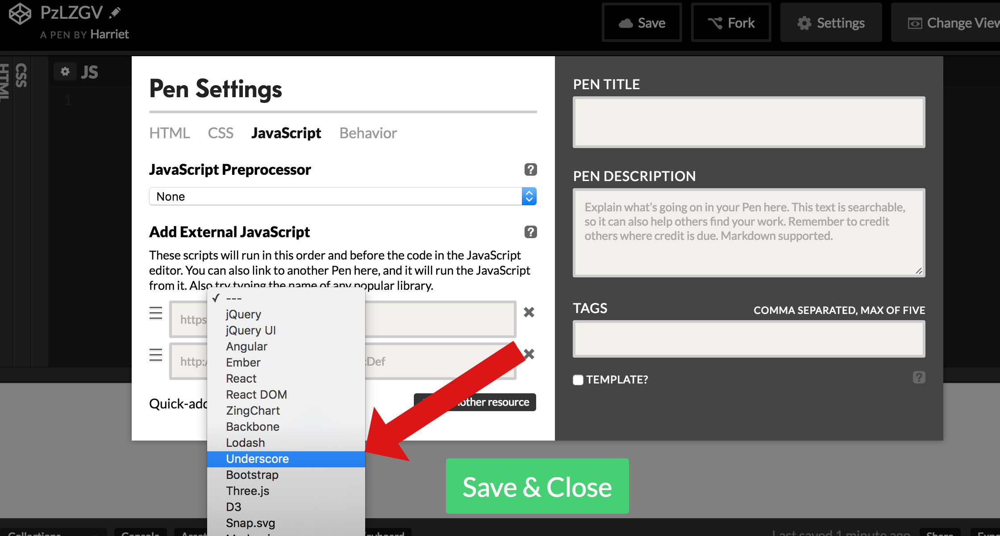

For this problem you should use your skills in functional programming to manipulate a dataset. In the main.js file you will find an array of cats. The function catSorter should take this array, apply a number of transformations to the array, and return the transformed array of cats. The following transformations need to happen:
Focus on one transformation at a time, gradually building up the complexity of your catSorter function. Methods such as map, filter and reduce will be vital here. The underscore library is available to use in this project if you want to use it, or you may choose to stick with the native functional methods.
If you want to practice using underscore methods, use Codepen.io and add the underscore library to your pen so that you can use its functionality:
Use the below tests to guide you. If all the tests are passing, your implementation works correctly.